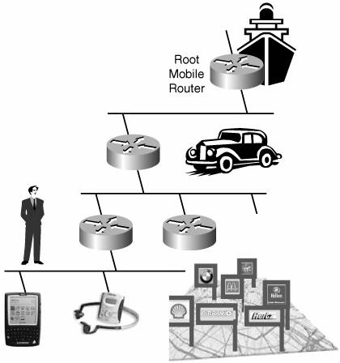
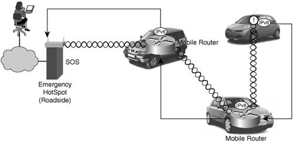
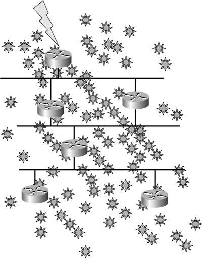
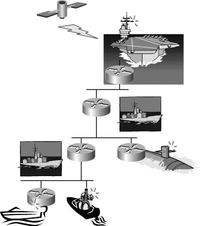
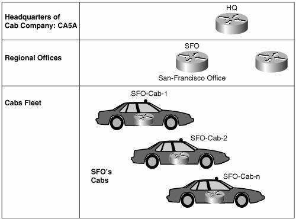

Network MobilityCurrent MIPv6 deals with mobile hosts as opposed to IP nodes, which include routers. Moving routers around also involves moving the attached networks with them, and it takes some additional signaling to implement. NEtwork MObility (NEMO) defines the operations of a mobile router that handles the mobility of a whole network; the mobile network nodes (MNNs) attached to a NEMO benefit transparently from that support and keep their global address as the whole network moves. According to the NEMO IETF working group charter:
The value of a mobile router is already identified through a number of service concepts:
Practical Use CasesA number of use cases were envisioned for a network that moves as a whole. The degree of global and relative mobility varies from one case to another, as illustrated in the following examples. Enterprise on the MoveThe first usage for network mobility might be a simple extension of the enterprise network to make it reachable from professional vehicles (DHL, FedEx, Brinks, and so on) or metropolitan public transportation (buses, subways, taxis, truck fleets). In this case, the mobile network is a simple moving stub, which gathers and delivers data on the way to and from multiple devices. Three distinct subcases can be identified:
Home GatewayWith the large address space offered by IPv6, it makes sense to imagine that an ISP will delegate a full globally addressable /64 prefix for the home, as opposed to a single public IPv4 as is customary today. And imagine that the ISP providing a globally reachable network at home to a million of households. In each house, the attached devices are reachable from the Internet. Some devices might be monitored by external services (for example, surveillance cameras, fridges, and video servers). They would be known by DNS name or IPv6 address, and they would be kept in various databases. Consider that an average family moves every 10 years. Without IP mobility, that would translate into 100,000 networks being renumbered each year, updating the various databases everywhere, changing DDNS, configurations, and registrations everywhere. NEMO changes the paradigm, and if the network at home is a mobile network, it is left unchanged as the family moves. For the ISP, network mobility could become a chargeable service when it was an unmanageable complexity. This continuity of service has value for both the ISP and for the customers, who perceive a better quality. Service providers have to decide whether an economical model can be based on an always-reachable network as opposed to application-specialized services based on SIP, for instance. Inside the home, visiting friends and family might connect to the network and share the facilities, for local gaming as well as Internet connectivity. The visitors might want to be reachable using their own HoAddr and therefore manage their own mobility. As a result, the home gateway, which is a mobile router, accepts visitors that are also mobile. This situation results in a nesting of tunnels, which has a number of dreadful consequences for the traffic in terms of path, latency, and security. NEMO has identified the need for a RO model where the visitor manages its own mobility and maintains its own tunnel to its own home agent. In a more generic way, there is a need for a model that guarantees anonymity and innocuousness for all parties, for their mutual benefit, and enables large nested configurations with no preexisting trust model, in a tit-for-tat fashion. Personal-Area NetworkA personal-area network connects together various wearable devices and body systems, such as biomonitors. A portable mobile router can provide global reachability for all these devices at all times, as long as a power management scheme is available to ensure a usable autonomy to the system, comparable to that of mobile phones today. Figure 8-6 shows a personal-area network. Figure 8-6. Personal Area Network The mobile router needs close-by, low-power connectivity in its environment. It will connect to the home gateway when at home, and then to buses, airports, cars, planes, trains, hotspots, and so on. This example creates a nested hierarchy of mobile routers, for instance: PDA > PAN > vehicle > ferry, which is a form of nesting that happens between entities of different types. The degree of nesting is limited by construction to the order of 2 or 3. Each level of hierarchy might be operated by a different service provider, and there is a need for a meta provider (a form of mobile virtual network operator, MVNO) that integrates the services of multiple ISPs and presents a single access control and billing to the final users. Internet-Enabled CarThe European Car2Car and the Japanese InternetCar consortiums are working on the definition of inter-vehicular communication. There is a wide consensus that this communication should be based on IPv6. This might mean car-to-car communication (for instance, to enable a continuous sessions between trucks in a convoy), regardless of the cellular coverage, and without the hassle of actual roaming. This might also mean packet relaying between cars. In the latter case, the cars organize themselves into a dynamic mesh network, helping each other as community service in a tit-for-tat fashion. Figure 8-7 shows an Internet-enabled car network. Figure 8-7. Internet-Enabled Car NetworkAs opposed to the previous example, all devices are of a same kind, and the network can reach an arbitrary depth. A typical use case is a traffic jam with hundreds to thousands of cars stalled. Most could be too far from a public access point to communicate. It might be mutually beneficial for all of them to collaborate, to share the radio spectrum and to extend the reach of the APs. Also, a geographically localized broadcast might be useful to signal the jam to vehicles arriving at full speed. Sensor NetworkA sensor network is an extreme form of an ad-hoc network because it relates to the amount of devices and their highly limited capabilities. Sensors are low-cost, mass-produced devices, used to monitor various metrics such as temperature or seismic activity around an area. A "sensor dust" is usually spread over a monitored location, and from that moment on, the sensors are fixed and operate for the lifetime of their batteries, which are their most critical resource. Figure 8-8 shows a sensor network. Figure 8-8. Sensor Network Around a sensor network, sinks are deployed to collect the measurement from the sensors and relay the commands from the controllers. Therefore, sensors automatically form a structure to forward unicast packets from the sensors to the sinks and to propagate broadcast packets across the network from the sinks. As in the previous case, the sensors act as a community and relay packets for each other; however, the model reaches its limits because of the operational cost on the batteries and the complexity involved with the networking part. To form a routing hierarchy and make each sensor much simpler and cheaper, a limited number of mobile routers can be deployed to form a mesh, act as default gateways for the sensors, and upload the data. In that case, the sensors can be short-range, plain IPv6 hosts. Mobile routers might be mobile (placed on planes or drones) to sweep the perimeter, or fixed and well distributed across the monitored location, with a few of them equipped with a back-haul capability acting as sinks. Fleet in MotionA fleet is a set of vehicles with global unity in motion and administration, yet allowing some degree of relative movement between the vehicles. Classical examples are a truck convoy along a road, vessels at sea, or jeeps in the dunes. Each vehicle owns at least one mobile network. Figure 8-9 shows a "fleet in motion" network. Figure 8-9. Fleet in Motion Interestingly, nodes might need to move physically to cover a dark zone and extend the range of the local network or to interconnect a stray group with the rest of the fleet. In the case of a fleet that roams far from its base, it is important to maintain the local connectivity independently of the global connectivity, which can be expensive and potentially erratic. Members of the fleet need to communicate with each other. This might be achieved by a form of Mobile Adhoc NETwork (MANET) within the fleet. They might also need a global reach back, in which case some NEMO support is required, too. A smooth integration of the MANET and the NEMO would be needed to optimize the flows within the MANET and to the outside. A mobile home agent can also be deployed within the fleet as a rendezvous point to concentrate the traffic to the outside, while ensuring that the local traffic is contained within the fleet. Object Model and TerminologyThe SEAMOBY (seamless mobility, for context and micro-mobility routing) and the NEMO terminology documents define all the terms used in the context of these technologies. Here follows a summary of the most important terms:
Basic OperationsRFC 3963 specifies the extensions to MIPv6 for networks in motion. Also called the NEMO basic support, this RFC describes the mobile router operation of registering with a home agent, establishing a tunnel, and requesting that the home agent installs the routes to the mobile network prefix(es) (MNPs) over that tunnel. Two modes of operation have been initially specified:
NEMO is now standardizing its prefix delegation, a third mode where the mobile router learns its MNP(s) from the home agent. This can be used by a mobile router that boots for the first time, to obtain dynamically its MNP as part of its initial configuration (bootstrap). This can also be used in runtime, to get additional persistent prefixes, or session prefixes, which will be valid for the duration of the binding. What About NEMO?So, is NEMO simply an adaptation to IPv6 of Cisco mobile router for IPv4? NEMO is actually different in a number of aspects:
Then, is NEMO a straightforward adaptation of MIPv6 for mobile routers? The answer is not so simple:
NEMO is rechartering to address specifically the RO problem. This might open the way to dramatic changes in the Internet such as IPv6 route projection and IPv6-based 4G telephony. Home Network in NEMOThe MIPv6 home is a subnet on a physical link. As mentioned earlier, it is tied to a physical link by ND-related operations. With NEMO, the home network becomes an aggregation. Home is not necessarily contained on a home link (for instance, extended home network) and can be deployed in a number of variations. Also, with NEMO, the home link can be a virtualized, too. This configuration can be deployed when mobile routers have no need to return home, which is not necessarily a problem for most scenarios considered. Note that the single home agent constraint can be fixed by an inter-home agent's protocol, such as HAHA. In the various models proposed hereafter, an aggregation is partitioned into mobile network prefixes and deployed in various fashions. The aggregation is generally called home. Home is advertised into the infrastructure by the home agent(s), and spans the home link and the mobile networks. Extended Home NetworkIn this model, the MIP home network is conserved as one subnet of a larger aggregation that also encompasses the mobile networks; this aggregation is called an extended home network. When at home, a mobile router performs its normal routing functions between the home link and the mobile networks. To maintain the MNP routes in the absence of a binding, either the home agent is configured with static routes to mobile network prefixes or, alternatively, the mobile routers recognizes that it is at home and participates in the local IGP. On the home link, only the home network inherited from MIP is installed, as the subnet from which all mobile nodes (hosts and routers) take their HoAddr. NEMO allows a mobile router to use an address from its own MNP as a HoAddr, but in the extended home network model, this does not seem to be the most natural operation, and it requires an additional support by the home agent to handle the extended range of HoAddrs. Aggregated Home NetworkIn this model, the home network is configured as the prefix on the home link, overlapping the MNPs. In the absence of a binding, the home agent expects all the MNNs to be on link. Therefore, there is no need for a static route or an automated participation to the local IGP when a mobile router is at home. In return, when the mobile router is connected to the home link with an EGRESS INTERFACE, it needs to switch automatically to a bridgingor a proxy ND mode between the home link and the mobile networks. If this automated bridging operation is not available on a given implementation, it is possible, alternatively, to connect the mobile router to the home link with the ingress interface(s) to make all MNNs directly available to the home agent without any bridging. A mobile router can use its address on one of its MNP as its HoAddr for binding purposes. But in that case, the ND DAD operation that MIP mandates on the binding cache creation at the home agent is moot because the real prefix is not on link. When configured for aggregated home network, an implementation could optionally verify that that the HoAddr matches (one of) the MNP(s) associated with that mobile router, and skip the DAD process. In particular, it should be configurable to reject a binding if the checking fails. Mobile Home NetworkA mobile home network is both a home network and a mobile network, where some mobile routers assume the role of home agent(s) for their NEMOs, forming a bitwise hierarchy of home networks. A head home agent advertises the global home to the infrastructure, and attracts all the packets from the outside to tunnel them to the mobile router that is responsible of the next level of hierarchy. The next mobile router decapsulates and re-encapsulates the packets to the next mobile router down the logical tree. This process is repeated until the destination is reached. The following is an example CLI for a cab company, with offices distributed in the largest cities in the United States. Cabs are equipped mobile routers, homed at the closest office from their location of operation. The example below focuses on the San Francisco (5F0) office. The topology is illustrated in Figure 8-10. Figure 8-10. Example of Mobile Home Network The configuration at the headquarters of the cab company is listed in Example 8-2. Example 8-2. Mobile Home Network Configuration at the Headquarters of a Cab Company
The configuration of the San Francisco office is shown in Example 8-3. Example 8-3. Mobile Home Network Configuration at the San Francisco Office
The configuration of one of the cabs of the San Francisco office is presented in Example 8-4. Example 8-4. Mobile Home Network Configuration on One of the Cabs
In this configuration, each level of the mobile home network CAB:C0::/32 is also an extended home network. The head home agent, CASA, acts as a doors gateway to accept bindings over IPv4. The SFO office and the cabs are configured to use DHAAD, and doors IPv4 traversal is enabled, too. For mobile routers, Ethernet0 is the egress interface, and Ethernet1 is the ingress interface and the home link on home agents. Distributed Home NetworkThe distributed home network model splits the home in different geographies, breaking the home link paradigm. This cannot be achieved with the NEMO basic support, which is still tied to the home link by its MIP inheritance. The global distribution of home agents is useful when a mobile router moves over geographically large areas, as is the case of airplanes, vehicles, and so on. If a mobile router moves far away from its home agent, the overhead of the basic NEMO caused by the bidirectional tunnel cannot be ignored. With the distribution of home, the mobile router establishes its tunnel with the closest home location, and the routing information is distributed over the mesh of tunnels between the home agents, as a form of RO. This distribution is also effective for scaling and load balancing. A global home might have multiple sites, each one composed of a number of home agent. Bindings are distributed over the home agents and redistributed by a routing protocol. The distributed home network requires coordination between the home agents across the Internet to set up a mesh of tunnels and establish routes over these tunnels. This is the core of the global HAHA protocol, which has been presented to the IETF. Virtual Home NetworkA virtual home network is a specific case where the home link is not a physical link. In fact, this model is applicable to both MIP and NEMO, and in the NEMO case, it applies orthogonally to any of the previous models. Practically, the home link can be configured on a loopback interface or on an automatic (point to multipoint) tunnel, which resolves the other tunnel endpoint dynamically using the binding cache. The virtual home model provides a higher availability of the home link, but an external system, such as HSRP, should be put in place to ensure a real high availability of home agent itself, which was partially covered by the home agent discovery and DHAAD mechanisms. However, physical mobile nodes on a virtual link cannot return home. Another advantage of the virtual home model is that it saves all the ND-related link-layer activities (home agent discovery, DAD, proxy ND). As a result, the home agent process could be simpler and more efficient. |